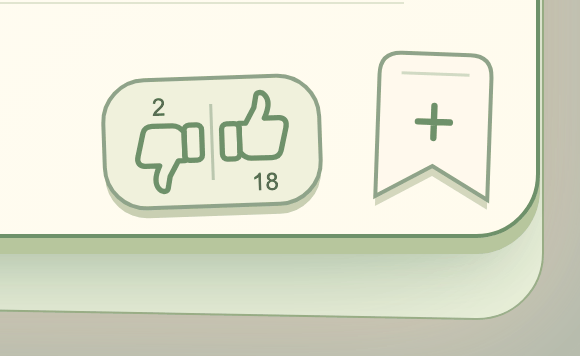

<!doctype html>
<html lang="es">
<meta charset="utf-8">
<meta name="viewport" content="width=device-width,initial-scale=1">
<title>Reedleaves · Acciones de tarjeta · Propuestas</title>
<style>
*{box-sizing:border-box}body{margin:0;background:#f1f2e8;color:#173d2c;font-family:"Avenir Next",system-ui,sans-serif}main{max-width:1000px;margin:auto;padding:24px 20px 48px}h1{font-size:22px;margin:0 0 20px}nav{display:flex;gap:8px;flex-wrap:wrap;margin-bottom:16px}button{font:inherit;font-size:14px;font-weight:700;color:inherit;background:#fff9ed;border:1.5px solid #779a72;border-radius:14px;min-height:44px;padding:10px 16px;cursor:pointer}button[aria-pressed=true]{background:#173d2c;color:#fff9ed}button:focus-visible,a:focus-visible{outline:3px solid #8b541e;outline-offset:4px}figure{margin:0}img{display:block;width:100%;height:auto}figcaption{padding:12px 4px;font-size:14px}a{color:inherit;text-underline-offset:3px}[hidden]{display:none}
</style>
<main>
<h1>Acciones de tarjeta · Salvia</h1>
<figure><figcaption><a href="motion/index.html">Probar guardar tarjeta</a> · <a href="motion/estados.png">Ver ambos estados</a> · <a href="colors/index.html">Propuestas de color</a></figcaption></figure>
</main>
</html>
